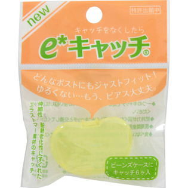

返回列表
产品名称：ｅ＊キャッチ

ワンダーワークス ｅ＊キャッチ ６個
メーカー ワンダーワークス
JANコード 4521947000589
商品の特徴
○キャッチをなくしたら
○どんなポストにもジャストフィット！ゆるくない・・・もう、ピアス大丈夫。
○伸縮性・耐熱老化性にすぐれたエラストマー素材のキャッチ。
○ビーンズケースにキャッチ6ヶ入
成分・分量
エラストマー素材
用法及び用量
ポスト径0.6-0.9mmのピアスキャッチとしてご使用ください。